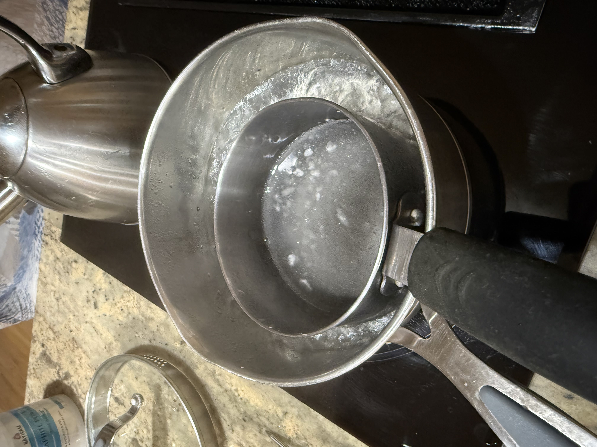
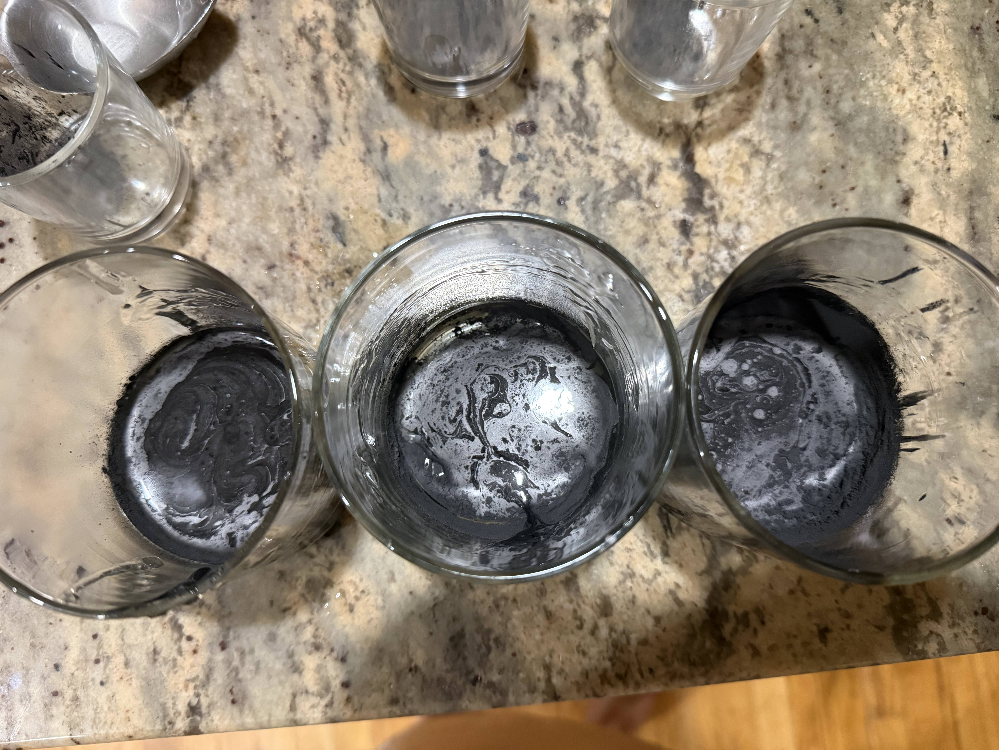
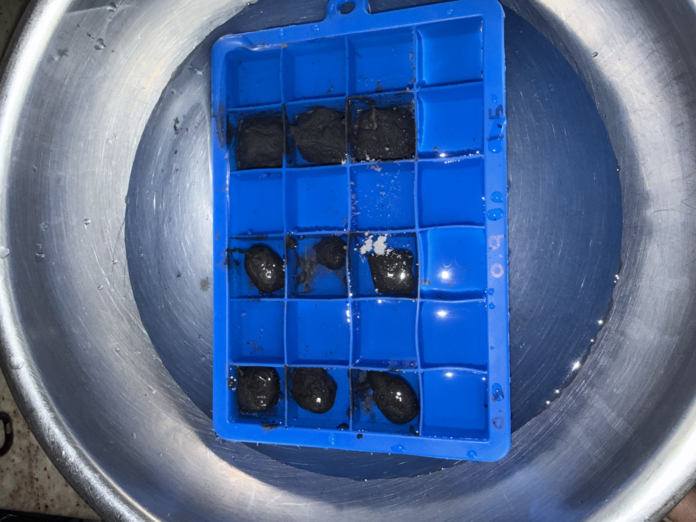
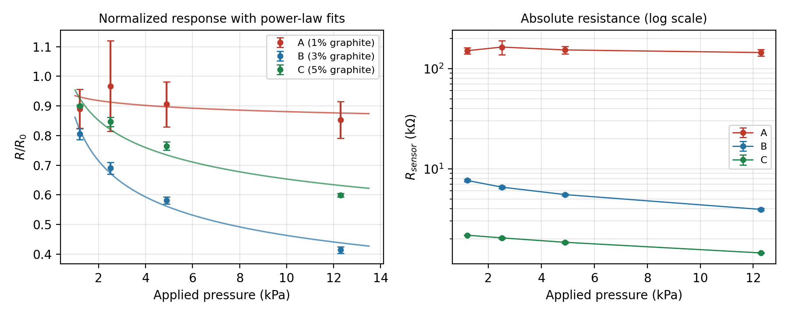
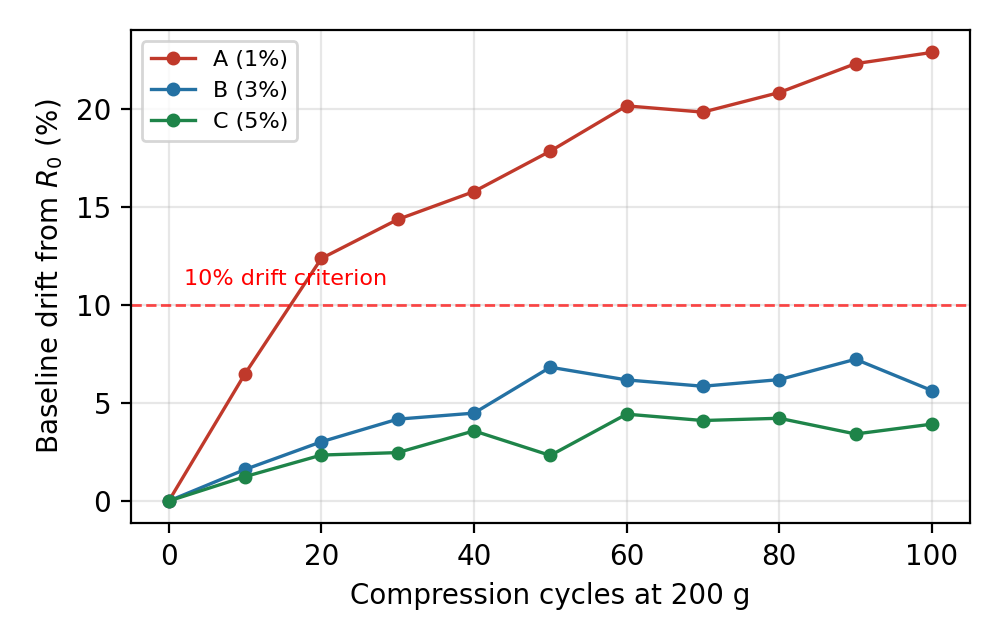

A squishy pressure sensor made from seaweed extract and graphite powder, read by an Arduino. Nobody assigned this one. I wanted a project that ran from mixing the material all the way to plotting the data.
My coursework usually hands me one layer of a problem: a lab that ends once the sample is characterized, or one where the instrument already works. I wanted to make the material, build the circuit that reads it, and write the code that plots the result.
The idea is simple. Mix conductive graphite into a soft gel and the particles form a loose network electricity can travel through. Squeeze it and they pack closer together, so current flows more easily. Measure that change and you know how hard you pressed. Too little graphite and the particles never touch, so nothing works. I wanted to find where that cutoff sits, in the pressure range that matters for a sensor worn on skin.
Sodium alginate is the seaweed extract used to thicken ice cream. It dissolves in warm water and firms up in a calcium bath at room temperature, so no oven and nothing toxic. I held it at 60 °C over a double boiler since I do not own a hotplate, stirred in graphite at three amounts, cast it into 20 by 20 by 5 mm molds, and pressed copper tape into each sample for the contacts.
Each gel went into a circuit that turns resistance into a voltage the Arduino reads ten times a second. Python smoothed the noise, fit the calibration curves, and confirmed the sensor could track a finger tapping at a steady rate.
The gels turned out to be the fragile part, not the electronics. This is the fourth batch. One shrank into lumps because I used the wrong tray, one cracked overnight after I left it uncovered, and one had the graphite sink before it set because I under-stirred. Storing them sealed with a damp paper towel and a splash of calcium solution finally worked.
I also learned this kind of circuit only works when its fixed resistor is close to what you are measuring. My 1 percent gel came in around 169 kΩ and my resistors top out at 10 kΩ, so the Arduino read it in jumps about as coarse as the signal itself. That data is junk twice over: too little graphite to conduct well, and no way to read it properly. I kept it in anyway, since a sample that fails is the clearest evidence of where the cutoff is.

Double boiler standing in for a hotplate. Holds 60 °C without scorching the alginate.

The three mixtures before casting. Streaks mean the graphite is not fully dispersed yet.

An early materials test, labeled 0.3 / 0.9 / 1.5 g graphite, just checking whether the gels would set at all. Wrong tray, oversized cavities, and they shrank away from the mold. Not the setup I used for the samples I tested.
Resistance dropped sharply between the 1 and 3 percent samples, which is the cutoff I was after. The 3 and 5 percent gels responded cleanly to pressure. The 1 percent one barely responded.
| Sample | Graphite | Starting R | Change under load | Sensitivity | Drift, 100 presses |
|---|---|---|---|---|---|
| A | 1% | 169 kΩ | 14.7% | 2.07 | 22.9% |
| B | 3% | 9.5 kΩ | 58.6% | 9.46 | 5.6% |
| C | 5% | 2.4 kΩ | 40.1% | 7.71 | 3.9% |

Calibration curves. Left: each sample compared to its own starting resistance. Right: absolute resistance. Error bars are ±1 SD across 5 trials.
The 3 percent gel beat the 5 percent one. More graphite means better conductivity, but past a point the particles are packed so tightly that squeezing adds nothing. The sweet spot sits just above the cutoff, not as high as you can go.
That sample matched published sensitivity values for this kind of sensor, held steady through 100 presses, and picked out a twice-per-second tap when I ran the signal through a frequency analysis. Gel, circuit, and code all work.

Drift over 100 presses. The 3 and 5 percent gels stay under the 10 percent benchmark. The 1 percent one does not.
The surprise was the saltwater test. Soaking the best sensor in saline shifted its resistance 34 percent, more than pressing on it does. Salt ions interfere with the graphite network, and skin is salty. Fixing that matters more than squeezing out extra sensitivity.
I wrote this up as a short lab report with the protocol, the data, and what I would change. The process works. My limits were sample handling, a kitchen scale, and the range of my resistors, not the chemistry.
Next round: more gels per concentration, 2 and 4 percent added to pin down the cutoff, resistors above 10 kΩ so the high-resistance samples can be read honestly, testing in a humid box so I can tell drying out from wearing out, and a coating for the saltwater problem.
↓ open report in new tab